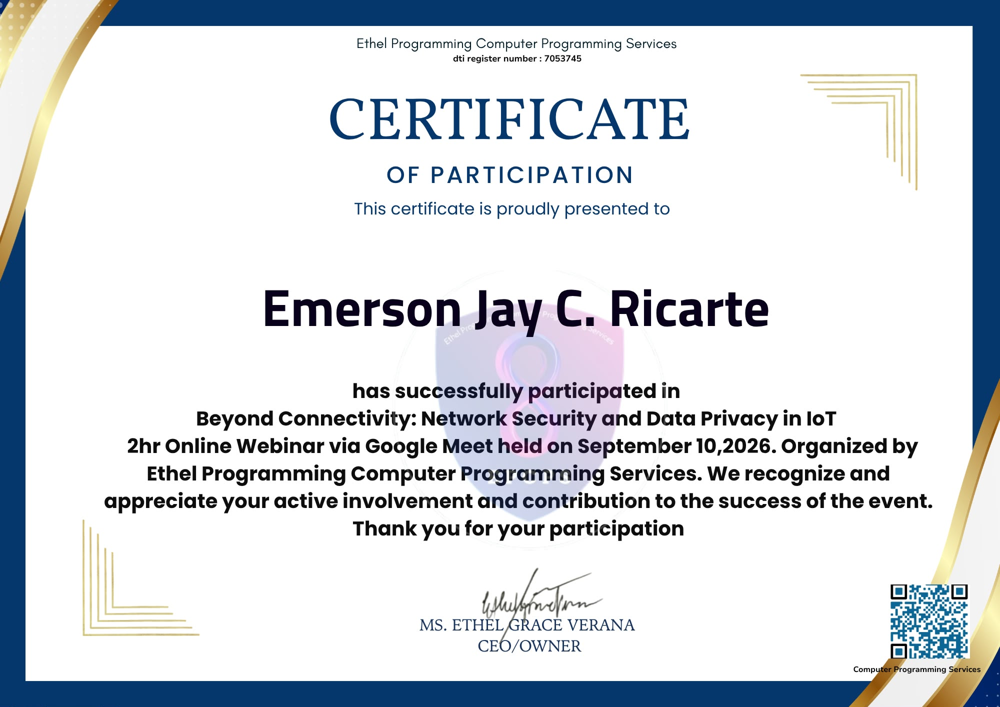

Certificate of Participation — Beyond Connectivity: Network Security and Data Privacy in IoT, Ethel Programming Computer Programming Services, September 10, 2026
Attendance form — response recorded, September 10, 2026
On September 10, 2026, I attended the two-hour online webinar "Beyond Connectivity: Network Security and Data Privacy in IoT," conducted via Google Meet and organized by Ethel Programming Computer Programming Services. The session examined how connecting more devices to a network also widens the attack surface available to bad actors, and what that means for the people and organizations relying on those devices.
Every new connected device is also a new door — and someone has to be responsible for locking it.
The facilitators walked through common IoT security weaknesses, from default credentials left unchanged to poorly segmented networks that let a single compromised device put an entire system at risk. Alongside the technical side, the session spent real time on data privacy — how continuously collected sensor and usage data needs clear governance, since it's often personal or sensitive even when it doesn't look that way at first.
What stood out most was the framing of security as an ethical issue as much as a technical one: decisions about what data to collect, how long to keep it, and who can access it carry real consequences for the people on the other end of the device.
Every additional connected device expands the network's attack surface and needs to be secured deliberately.
Basic lapses — default credentials, flat network segmentation — remain some of the most common IoT vulnerabilities.
Continuously collected device data requires clear governance on retention, access, and purpose.
Network security and data privacy in IoT are ethical responsibilities, not just technical ones.